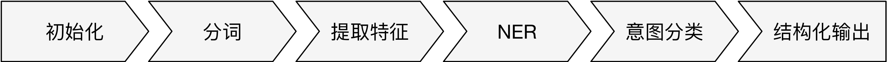

本文将详细介绍 Rasa NLU 的 pipeline 和 component，介绍其原理和如何使用。
兼容性说明：
本文介绍的 Rasa NLU 知识都是基于 v0.13.2, 不同版本之间可能会有差异，不过不用担心，根据官方消息，Rasa NLU 已经进入比较成熟的阶段，后续出现较大结构变动的可能性不大，因此本文介绍的知识在后续版本，甚至 v1.x 依然有效。
Rasa NLU 是一个基于 pipeline 的通用框架。这样可以获得最大的灵活性。
pipeline 定义了各个组件之间数据的前后流动关系，组件之间是存在依赖关系的，任意一个组件的依赖需求没有被满足都将导致 pipeline 出错（Rasa NLU 会在启动的时候检查是否每一个组件的依赖都被满足，如果没有满足，则终止运行并给出相关的提示消息）。具有以下特征：
- 组件之间的顺序关系至关重要，比如 NER 组件需要前面的组件提供分词结果才能正常工作，那么前面的组件中有必须有一个分词器。
- 组件是可以相互替换的，比如同样是提供分词结果，同时有几个 component 可以选择，比如中文的可以选择清华的分词器、北大的分词器的。
- 有些组件是互斥的，比如：分词器是互斥的，分词结果不能同时由两个组件提供，否则会出现混乱。
- 有些组件是可以同时使用的，比如：提取文本特征的组件可以同时使用基于规则的和基于文本嵌入向量的。
一个 NLU 应用通常包括 命名实体识别 和 意图识别 两个任务。为了完成这些任务，一个 典型 的 Rasa NLU pipeline 通常具有以下的 pattern:

- 初始化类组件：为了加载模型文件，为后续的组件提供框架支持，如初始化
SpaCy和MITIE - 分词组件：将文本分割成词语序列，为后续的高级 NLP 任务提供基础数据
- 提取特征：提取词语序列的文本特征，通常采用
Word Embedding的方式，提取特征的组件可以同时使用，同时搭配的还可能有基于正则表达式的提取特征的方法。 - NER 组件：根据前面提供的特征对文本进行命名实体的识别
- 意图分类：按照语义对文本进行意图的分类，也称
意图识别
初始化组件
初始化组件提供加载模型文件为后续组件所用的组件提供初始化。目前只有两个初始化组件：nlp_spacy 和 nlp_mitie，分别对应 SpaCy（https://spacy.io/） 和 MITIE（https://github.com/mit-nlp/MITIE） 框架。
基于 MITIE 的组件，如： tokenizer_mitie、intent_featurizer_mitie、ner_mitie 和 intent_classifier_mitie 都将依赖 nlp_mitie 提供的对象。
基于 SpaCy 的组件，如：tokenizer_spacy、intent_featurizer_spacy 和 ner_spacy 都将依赖 nlp_spacy 提供的对象。
分词组件
什么是分词？
自然语言处理在通常情况下都需要进行进行分词操作，那么什么是词，为什么要分词呢？
按照维基百科（https://zh.wikipedia.org/wiki/词）的定义：
在语言学中，词（英语：word），又称为单词，是能独立运用并含有语义内容或语用内容（即具有表面含义或实际含义）的最小单位。
很多通用的 NLP 算法、语法语义分析和 End-to-End 应用都是以词作为基本输入单元。在自然语言处理的任务中，把连续的字（英语：character）分隔成更具有语言语义学上意义的词（英语：word）。这个过程就叫做分词（英语：tokenize /segment）。
举例来说：
王小明在北京的清华大学读书。
可以被分词成
王小明在北京的清华大学读书。
Rasa 分词组件
Rasa 分词组件中，目前直接支持中文的组件是 tokenizer_jieba 使用基于 MIT 开源协议的流行中文分词器 jieba (https://github.com/fxsjy/jieba) 作为底层引擎，经过改造可以支持中文分词的组件是 tokenizer_mitie，暂不支持中文分词但未来会支持中文分词的组件是 tokenizer_spacy。想用其他的分词器？当然没问题，因为 Rasa NLU 采用 pipeline 机制，扩展起来非常容易，你只需要自己实现一个分词组件就可以了，后面的章节我将演示如何自定义自己的中文分词器，本章节将不研究如何实现自己的组件。
提取特征
无论是命名实体识别还是意图分类，都需要上游的组件提供特征。常见的特征选择为：词向量、Bag-of-words 和 N-grams 等。用户可以选择同时使用任意的上述组件提取特征，这些组件在实现层面上做了合并特性的操作，因此可以任意和和提取特征的组件一起使用。下面逐一介绍各个组件。
词向量特征
TODO
Bag-of-words
TODO
N-grams
TODO
正则表达式特征
TODO
NER
SpaCy 支持多种 NER 组件：ner_crf 、ner_mitie 、ner_spacy 、ner_duckling 、ner_duckling_http 和 ner_synonyms。
ner_crf
这个组件如其名，使用 CRF 模型来做 ENR, CRF 模型只依赖 tokens 本身，如果想在 feature function 中使用 POS 特性 那么则需要 nlp_spacy 组件提供 spacy_doc 对象来提供 POS 信息。关于 CRF 模型的原理和使用，请移步章节 TODO
ner_mitie
利用 MITIE 模型提供的 language model，只需要 tokens 就可以进行 NER。TODO: 具体原理待研究
ner_spacy
利用 SpaCy 模型自带的 NER 功能，模型的训练需要在 SpaCy 框架下进行，当前 SpaCy 模型不支持用户训练自己的模型，而 SpaCy 官方的模型只支持常见的几种实体，具体情况见官方文档。
ner_duckling 和 ner_duckling_http
Duckling 是 Facebook 出品的一款用 Haskell 语言写成的 NER 库，基于规则和模型。Duckling 支持多种实体的提取，如下表（TODO: 标注 Duckling 的版本）：
| Dimension | Example input | Example value output |
|---|---|---|
AmountOfMoney |
“42€” | {"value":42,"type":"value","unit":"EUR"} |
Distance |
“6 miles” | {"value":6,"type":"value","unit":"mile"} |
Duration |
“3 mins” | {"value":3,"minute":3,"unit":"minute","normalized":{"value":180,"unit":"second"}} |
Email |
“duckling-team@fb.com” | {"value":"duckling-team@fb.com"} |
Numeral |
“eighty eight” | {"value":88,"type":"value"} |
Ordinal |
“33rd” | {"value":33,"type":"value"} |
PhoneNumber |
“+1 (650) 123-4567” | {"value":"(+1) 6501234567"} |
Quantity |
“3 cups of sugar” | {"value":3,"type":"value","product":"sugar","unit":"cup"} |
Temperature |
“80F” | {"value":80,"type":"value","unit":"fahrenheit"} |
Time |
“today at 9am” | {"values":[{"value":"2016-12-14T09:00:00.000-08:00","grain":"hour","type":"value"}],"value":"2016-12-14T09:00:00.000-08:00","grain":"hour","type":"value"} |
Url |
“https://api.wit.ai/message?q=hi" | {"value":"https://api.wit.ai/message?q=hi","domain":"api.wit.ai"} |
Volume |
“4 gallons” | {"value":4,"type":"value","unit":"gallon"} |
TODO: 考虑翻译上表为中文
这里需要提醒的是 Duckling 对中文的支持并不是很全面，只支持上面诸多实体类型中的几种。
在 Rssa 中有两种方式去调用 Duckling ，一种是通过 duckling 这个包使用 wrap 的方式访问，另一种是通过 HTTP 访问。上述两种访问方式分别对应 ner_duckling 和 ner_duckling_http 这两个组件。上述两种组件如何起来并不困难，具体请查阅官方文档。
ner_synonyms
正确来说 ner_synonyms 不是一个命名实体的提取组件，更像是一个归一化的组件。ner_synonyms 主要是讲各种同义词（synonyms）映射成为标准词汇，比如将实体 KFC 的值改写成 肯德基，这种归一化的操作为后续业务处理提供便利。
意图分类
意图识别也称意图分类，Rasa 中的内建组件有 intent_classifier_mitie、intent_classifier_sklearn、intent_classifier_tensorflow_embedding 和 intent_classifier_keyword。
intent_classifier_mitie
TODO
intent_classifier_sklearn
TODO
intent_classifier_tensorflow_embedding
TODO
intent_classifer_keyword
TODO
结构化输出
Rasa NLU 通过结构化输出组件将结果输出，在Rasa NLU 中结构化输出组件是框架提供的，不属于 Pipeline 的可变动部分，因此也不需要用户去配置（也无法直接配置）。
TODO：解释输出的结构，包括组件不同的情况下，可能的结果
配置 Pipeline
Rasa NLU 的配置文件使用的是 YAML (YAML Ain’t Markup Language) 格式。下面两个是Rasa NLU 配置的文件的样例。
language: "en"
pipeline:
- name: "nlp_mitie"
model: "data/total_word_feature_extractor.dat"
- name: "tokenizer_mitie"
- name: "ner_mitie"
- name: "ner_synonyms"
- name: "intent_entity_featurizer_regex"
- name: "intent_classifier_mitie"
大体上 Rasa NLU 的配置文件可以分为两个主要的 Key：language 和 pipeline
language 用于指定 Rasa NLU 将要处理的语言。因为某些种类的组件，比如分词组件，是对语言敏感的。比如说 jieba 分词就不能正确的处理日文的分词，反之亦然。所有的 Rasa NLU 组件都有一个语言兼容性列表。如果某个组件不支持当前设置的语言，则会在 Pipeline 启动前被框架检测到。另外这种语言信息也可以被其他组件作为配置变量，比如在使用 SpaCy 的时候，默认就会载入和 language 同名的语言模型。如果省略该字段，则默认为 en。
pipeline 是配置文件的核心，pipeline 由列表构成（表现在 YAML 中 就是使用 - 开头），列表的每一个元素都是一个字典(表现在 YAML 中类似于 name: xxx)，这些字典直接对应着 pipeline 的组件。每个组件具体是什么都由字典的 name 键来指定，出现在字典中的其他的键都是对这个组件的配置，运行时将传递给各个组件，具体有什么键和什么意义都由各个组件自行定义。
在上例中，共有组件 6 个，分别是 nlp_mitie、 tokenizer_mitie、 ner_mitie、 ner_synonyms 、intent_entity_featurizer_regex 和 intent_classifier_mitie。其中 nlp_mitie 组件拥有一个配置项：键（key）为 model，值（value）为 data/total_word_feature_extractor.dat，这个配置项指定了 MITIE 模型文件所在是位置。
为了最大化的方便用户，Rasa NLU 的配置还可以采用预定义的 pipeline 的方式，如下
pipeline: tensorflow_embedding
直接给 pipeline 赋值一个字符串，这个字符串代表了预定义的 pipeline，在上例中预定义的 pipeline 名为 tensorflow_embedding。
预定义 Pipeline
Rasa NLU 预定义了几个常用的 pipeline
tensorflow_embedding
TODO
spacy_sklearn
TODO